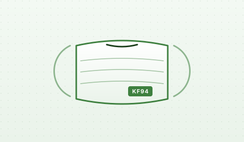

마스크
원자재 입고부터 자동화 생산, 시험성적, 용도별 패키징까지 — 마스크 제조의 전 공정을 한 곳에서 책임지는 통합 라인입니다.
01 · AUTOMATION
생산 자동화 장비
고속 자동화 라인으로 일관된 품질의 마스크를 안정적으로 생산합니다.
풀 오토메이션 본체 라인
원단 합지 → 코 와이어 삽입 → 성형 → 이어밴드 융착 → 컷팅 → 포장의 전 공정을 단일 라인에서 처리합니다. 사람의 개입을 최소화해 이물 혼입 리스크와 생산 편차를 동시에 줄였습니다.
분당 100매 이상의 생산 캐파를 기준으로 계획 생산을 운영하며, 품질 검사 라인이 인라인으로 통합되어 있습니다.

02 · EQUIPMENT
설비 구성
본체 성형기, 이어밴드 융착기, 검사기, 자동 포장기로 구성된 풀라인.
- STEP 01
원단 합지
3~4겹 원단을 정렬·합지하여 마스크 본체 시트를 만듭니다.
- STEP 02
본체 성형
플리츠(주름) 성형, 코 와이어 삽입, 컷팅을 자동으로 수행합니다.
- STEP 03
이어밴드 융착
초음파 융착으로 이어밴드를 강하게 부착합니다.
- STEP 04
품질 검사
인라인 비전 검사로 외관 불량을 자동 분류합니다.
- STEP 05
개별 포장
낱장 포장 또는 다포장 모드로 자동 패킹.
- STEP 06
출하 검수
로트 단위 샘플 시험 후 출하합니다.
03 · SPECIFICATIONS
설비 스펙
주요 설비의 기준 사양입니다. 라인 별 상세 도면은 영업팀을 통해 제공해 드립니다.
- BODY MACHINE
- 본체 성형 자동화 라인 · 분당 100매 이상
- EAR LOOP
- 초음파 융착 방식 · 좌우 동시
- NOSE WIRE
- 플라스틱 / 알루미늄 코어 듀얼 호환
- INSPECTION
- 인라인 비전 검사 + 수동 샘플 검수
- PACKING
- 낱개 / 다포장 자동 전환 · 라벨링 인라인
- CLEAN ROOM
- 제조 구역 청정도 ISO Class 8 등급 운영
04 · RAW MATERIAL
원자재
국내외 검증된 원단 공급사로부터 안정적으로 수급합니다.
4중 구조 원단
외부 부직포 → 멜트블로운 필터 → 지지 부직포 → 안면 접촉 부직포의 4중 구조를 기본 사양으로 채택합니다. 멜트블로운 필터는 미세입자 차단 효율을 결정짓는 핵심 소재로, 입고 시 매 로트 시험을 거칩니다.
원단 별 KC / KF / 시험성적은 영업팀에서 별도 제공합니다.

05 · TEST REPORTS
시험성적 · 인증
식약처 의약외품 기준에 부합하는 시험을 통과한 라인업을 운영합니다.
분진 포집 효율 94%
0.4μm 입자 기준 식약처 KF94 인증.
분진 포집 효율 80%
일상 사용 대상 KF80 인증.
안면부 흡기 저항
호흡 편의성 시험 통과.
누설률 시험
안면 누설률 인증 기준 적합.
06 · USAGE LINEUP
용도별 구성
고객 수요에 맞춰 일반 / 산업 / 의료 용도의 구성을 운영합니다.
- USAGE 01
일반 위생 마스크
일상 사용을 위한 KF80 / KF94 라인.
- USAGE 02
산업용 방진
분진 환경용 1종 마스크 사양.
- USAGE 03
의료용 (수술실 등)
의료기관 납품용 멸균/비멸균 라인.
마스크 OEM / 견적 문의
샘플 수령부터 생산 일정 협의까지 영업팀이 응답합니다.